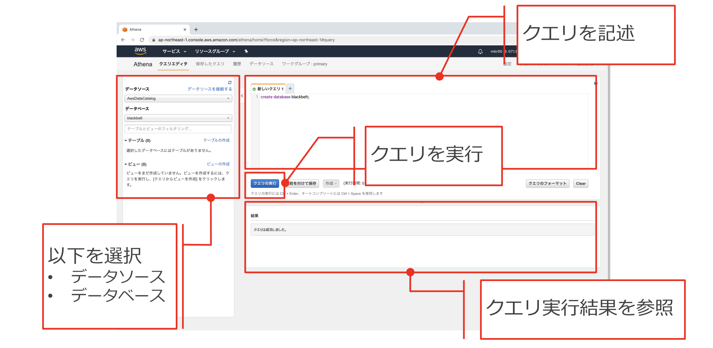
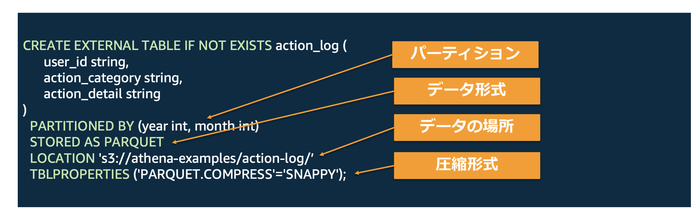

7.6. Athena¶
AthenaとはS3に保存されているデータをSQLクエリを使って直せ分析することができるサービス。
Athenaを利用することで、S3に配置されたデータのDLなどをせずに直接分析することができる。
注意点としては、どのようなテキストファイルでも検索できるわけではなく、決まったフォーマットがある。
7.6.1. Athenaの使い方¶
Athenaを利用するためには3つのステップが必要
データをS3に保存
テーブルを定義
クエリの実行

7.6.1.1. データをS3に保存¶
ログなどをS3に配信する場合は、Kinesisを利用する。 もしくは直接S3にデータをアップロードするなどする。
7.6.1.2. テーブルを定義¶
Athenaでは、クエリを発行するためにデータに対してテーブル定義が必要となる。 メタデータ定義を通じて、AthenaにS3上のデータをどのように解釈するかを指定することができる。 具体的には、S3に保管されているデータの中身や、パスを指定してテーブル定義を行う。
デフォルトでは、Apache Hive Metastoreと互換性のあるAWS Glue Data Catalogのデータ定義を使用する。 AWS Glue Data Catalogにテーブル定義を利用するためにAthena DDLを利用する。
7.6.1.2.1. Athena DDL¶
Athena DDLでは、HiveQL形式で記述する。
項目 |
説明 |
補足情報 |
|---|---|---|
標準的なテーブル定義 |
テーブルのカラム名、データ型、及びその他の基本的なテーブル構造を定義。 |
HiveQL形式で定義。CREATE TABLE文を使用して記述。 |
パーティション |
テーブルを分割し、クエリのパフォーマンスを向上させる。 |
PARTITIONED BY句を使用してパーティションを指定。 |
データ形式 |
データの保存形式を指定（例: Parquet, ORC, JSON, CSV）。 |
ROW FORMAT句やSTORED AS句を使用して指定。 |
データの場所 |
テーブルのデータが格納されているS3の場所を指定。 |
LOCATION句を使用してS3バケットのパスを指定。 |
圧縮形式 |
データの圧縮形式を指定（例: gzip, snappy, zlib）。 |
TBLPROPERTIES句で'parquet.compress'などの形式で指定。 |

7.6.1.2.2. データ形式¶
データ形式（STORED AS）の部分については以下のような形式がサポートされている。
データ形式 |
SerDe |
説明 |
|---|---|---|
CSV |
LazySimpleSerDe, OpenCSVSerDe |
標準のCSVファイルにはLazySimpleSerDeを使用。引用符付きカラムが含まれる場合はOpenCSVSerDeを使用。 |
TSV |
LazySimpleSerDe |
タブ区切り（TSV）形式には、LazySimpleSerDeを使用し、区切り文字をタブ('\t')に指定。 |
カスタム区切り |
LazySimpleSerDe |
任意の区切り文字でカスタマイズされたテキスト形式に対応。LazySimpleSerDeを使用し、区切り文字を指定。 |
JSON |
HiveJSONSerDe, OpenXJsonSerDe |
JSONデータにはHiveJSONSerDeやOpenXJsonSerDeを使用。前者は基本的なJSON形式に、後者はネストされたJSON構造に対応。 |
Apache Avro |
AvroSerDe |
Avro形式のデータに対応。効率的なバイナリ形式で、スキーマが明確に定義されたデータに使用。 |
ORC |
ORCSerDe |
ORC形式のデータに対応。高圧縮率と高いクエリパフォーマンスが特徴。 |
Apache Parquet |
ParquetSerDe |
Parquet形式のデータに対応。列志向の形式で、大規模データセットに対して最適化されたパフォーマンスを提供。 |
7.6.1.2.3. データ定義具体例(Hive型の場合)¶
S3のパスがHive型だった場合のテーブル定義例を上げる。
S3のファイルパスは以下のように、month=08などHive型であるとする。
s3://my-bucket/logs/year=2024/month=08/day=24/hour=10/logs.json
データの中身は以下のような一般的なログを想定し、Jsonで記述されているとする
{
"logStreamName": "stream1",
"timestamp": 1692877800000,
"message": "User login successful",
"logType": "INFO",
"containerId": "abc123",
"containerName": "webapp",
"taskArn": "arn:aws:ecs:region:account_id:task/abc123",
"ecsCluster": "default"
}
テーブルを定義する。PARTITIONで年月情報を指定するが現時点でテーブルには年月日の情報はない。
CREATE EXTERNAL TABLE logs_hive (
logStreamName STRING,
timestamp BIGINT,
message STRING,
logType STRING,
containerId STRING,
containerName STRING,
taskArn STRING,
ecsCluster STRING
)
PARTITIONED BY (
year STRING,
month STRING,
day STRING,
hour STRING
)
ROW FORMAT SERDE 'org.openx.data.jsonserde.JsonSerDe'
STORED AS TEXTFILE
LOCATION 's3://my-bucket/logs/'
TBLPROPERTIES ('has_encrypted_data'='false');
MSCK REPAIRを利用することで、S3のパスからHive形式部分を自動で認識し、テーブルに追加してくれる。
MSCK REPAIR TABLE logs_hive;
上記を実行するとテーブルは以下のような構造となる
ogStreamName |
timestamp |
message |
logType |
containerId |
containerName |
taskArn |
ecsCluster |
year |
month |
day |
hour |
|---|---|---|---|---|---|---|---|---|---|---|---|
stream1 |
1692877800000 |
User login successful |
INFO |
abc123 |
webapp |
arn:aws:ecs:region:account_id |
/abc123 |
default |
2024 |
08 |
24 |
7.6.1.2.4. データ定義具体例(Hive型ではない場合)¶
S3のパスが以下のようにHive型ではない場合、PARTITIONで利用するための列の追加には工夫が必要
s3://my-bucket/logs/2024/08/24/10/logs.json
テーブル定義は、Hive型と変わらない
CREATE EXTERNAL TABLE logs_non_hive (
logStreamName STRING,
timestamp BIGINT,
message STRING,
logType STRING,
containerId STRING,
containerName STRING,
taskArn STRING,
ecsCluster STRING
)
PARTITIONED BY (
year STRING,
month STRING,
day STRING,
hour STRING
)
ROW FORMAT SERDE 'org.openx.data.jsonserde.JsonSerDe'
STORED AS TEXTFILE
LOCATION 's3://my-bucket/logs/'
TBLPROPERTIES ('has_encrypted_data'='false');
ただし、Hive型ではないため、`MSCK REPAIR TABLER logs_hive'を実行しても、自動でテーブルに列を追加してくれない。 次のコマンドを実行し、パーティションを追加する必要がある。
ALTER TABLE logs_non_hive ADD PARTITION (
year='2024',
month='08',
day='24',
hour='10'
)
LOCATION 's3://my-bucket/logs/2024/08/24/10/';
7.6.1.3. クエリの実行¶
基本的にはSELECTやFROMなど一般的なSQS文を利用することができる。